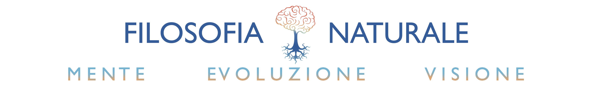
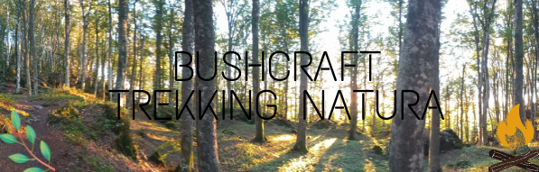
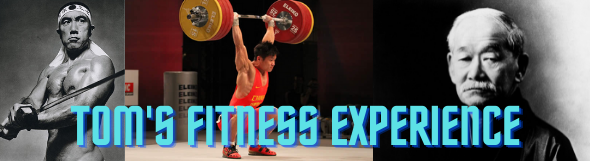

I miei interessi
FILOSOFIA NATURALE
In progress...
un progetto che cominciero' a breve, dedicato alla comunicazione e alla divulgaione scientifica e alla diffusione della pratica della meditazione vipassana. Pratica spirituale, pensiero filosofico e attitudine scientifica possono essere tutt'uno in armonia e senza frizione.

BOSCHI, ALPINISMO, BUSHCRAFTING...
In progress...
...E altre cose lontane dalla tecno-distopia contemporanea...
Se volete consigliarmi escursioni, prodotti da campeggio, o libri sul rapporto tra essere umano e natura (o anche su altri temi), oppure se volete mandarmi attrezzatura da escursione (coltelli, fornelli, tende etc.) prodotti dalla vostra azienda da recensire, non esitate a contattarmi a:
ALCUNI PROGRAMMI PER LO SVILUPPO DELLA FORZA.
In progress...
Alcuni programmi per mantenersi in forma, uno per principianti, fatto da me (split classico spingi-tira-gambe), uno molto popolare sviluppato dal powerlifter Johnny Candito, tradotto in Italiano da me, e alcuni consigli di nutrizione.